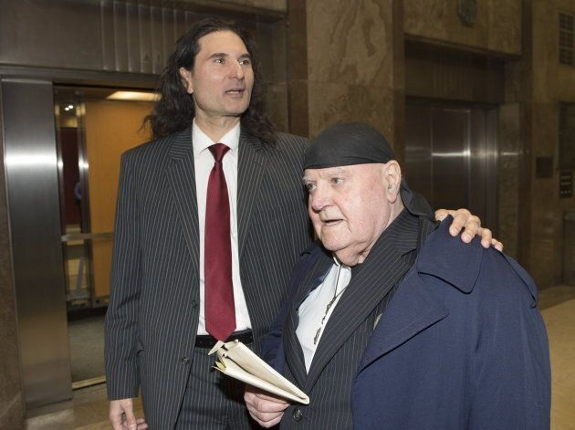

James Sears Original Sentence
November 17th, 2020
This propaganda piece, written yet again by Colin Perkel, was originally written on August 22, 2019. I'm doing a review of this, because I think that it is highly relevant for understanding the Sears case currently. Also, these people are scum.
The Canadian Press:
TDC_ARTICLE_START
The editor of a Toronto-based publication was handed the maximum one-year jail sentence on Thursday for promoting hatred against women and Jews.
In sentencing James Sears, Ontario Court Justice Richard Blouin said he would have handed down a much stiffer sentence had the law allowed.
“It is impossible, in my view, to conclude that Mr. Sears … should receive a sentence of any less than 18 months in jail,” Justice Blouin said. “Mr. Sears … promoted hate to a vast audience in an era where online exposure to this material inexorably leads to extremism and the potential of mass casualties.”
TDC_ARTICLE_STOP
 Pictured: actual mass murder propagandist who's lies directly caused the deaths of 460,000 Iraqi Civilians, 4,497 US Soldiers, and many others. Also pictured: man who has not been persecuted for "hate speech," or censored in any way, by any government or corporation. Also pictured: man who went to SFU in 2019 to do a speech called "Confronting the Disinformation Age."
Always keep in mind when you see these people lecturing us about "muh hate," and "speech that leads to violence," or any other bullshit, that actual literal Mass Murder Propagandists with the blood of children on their hands are not being censored, thrown in jail, denied payment processors, or lectured by robed tyrants like Injustice Richard Blouin. Even if they're outright liars.
But luckily there were no "mass casualties," in that war in Iraq we got lied into by Zionist Jews.
TDC_ARTICLE_START
The sentencing of the editor of Your Ward News, who had sought to reopen his trial, came after Blouin rejected Sears's arguments that his lawyer had thrown the case. Sears, 55, who had gone into the courtroom expressing confidence that the case would be again put over, looked stunned at the sudden turn of events and quietly shook his head.
"Don't worry honey," he told his wife, who was carrying a child, as officers handcuffed him and led him from the courtroom.
"That's not right," one supporter said from the back of the courtroom before leaving in tears.
TDC_ARTICLE_STOP
Pictured: actual mass murder propagandist who's lies directly caused the deaths of 460,000 Iraqi Civilians, 4,497 US Soldiers, and many others. Also pictured: man who has not been persecuted for "hate speech," or censored in any way, by any government or corporation. Also pictured: man who went to SFU in 2019 to do a speech called "Confronting the Disinformation Age."
Always keep in mind when you see these people lecturing us about "muh hate," and "speech that leads to violence," or any other bullshit, that actual literal Mass Murder Propagandists with the blood of children on their hands are not being censored, thrown in jail, denied payment processors, or lectured by robed tyrants like Injustice Richard Blouin. Even if they're outright liars.
But luckily there were no "mass casualties," in that war in Iraq we got lied into by Zionist Jews.
TDC_ARTICLE_START
The sentencing of the editor of Your Ward News, who had sought to reopen his trial, came after Blouin rejected Sears's arguments that his lawyer had thrown the case. Sears, 55, who had gone into the courtroom expressing confidence that the case would be again put over, looked stunned at the sudden turn of events and quietly shook his head.
"Don't worry honey," he told his wife, who was carrying a child, as officers handcuffed him and led him from the courtroom.
"That's not right," one supporter said from the back of the courtroom before leaving in tears.
TDC_ARTICLE_STOP
Propagandist Colin Perkel
Look at how fucking vicious and disgusting these people are. This is absolutely Propagandist Colin Perkel laughing at James Sears and his pregnant wife.
"LOL, this filthy goy's wife is going to be struggling now that she's heavily pregnant and her husband is in jail. Oh and he'll continue to be in jail while their baby is an infant. And she might struggle to put food on the table. LOLOL fuck this goy bitch."
And you know this is a complete and utter injustice, becuase, and I'll get to this in a second, they never actually quote James Sears, or LeRoy St. Germain, or Your Ward News. They make sure to filter that for the NPC's who still read this seriously. Well I mean you also know it's an injustice because this is something Schlomo is doing to a goy, but I mean on closer level.
TDC_ARTICLE_START
Blouin had found Sears and Your Ward News publisher LeRoy St. Germaine, 77, guilty in January of two hate counts each.
Evidence was that the free publication was distributed over three years to more than 300,000 homes and businesses in the Toronto area as well as online.
It consistently portrayed women as inferior and as inviting rape. It also promoted tropes of Jews drinking the blood of Christian children and denied the Holocaust occurred. Those themes continued even after the trial started, Blouin noted.
TDC_ARTICLE_STOP
So let's see. There are no actual quotes of anything Sears has said, other than vague portrayal of women as inferior. Then he fact checks the Lampshadocaust, again without quotes.
Let me make this very clear if anyone litigious is reading this. I definitely believe that 500,000 jew children were lured into gas chambers with chocolate bars and other sweets. Or that jews were forced to climb tall trees and caw like roosters before Aryan Lumberjacks would cut the trees down, causing the jew to fall to its death. Or that jews were put onto a rollercoaster that ended in an oven. Or shower room gas chambers. Or electrified floors. Or jew children getting their eyeballs plucked out and then glued onto the wall. Or jew fat bars of soap. Or jews getting their heads shrunken down Aztec style.
And most of all the lampshades.
TDC_ARTICLE_START
After sentencing submissions in April, Sears fired his lawyer, Dean Embry, and attempted to have Blouin reopen the trial so he could call expert witnesses in his defence. Sentencing had been repeatedly delayed as Sears sought to convince Blouin.
In an affidavit submitted to the court, Embry strenuously denied any suggestion he deliberately botched the case, saying he had defended his client to the best of his ability and that his client had accepted his judgments.
"I am proud of the work I did for him," Embry said.
TDC_ARTICLE_STOP
I covered this in the previous article, which you can find here.
TL:DR: His lawyer almost certainly did throw this case, by not challenging that the Lampshadocaust happened. The article continues on this point for a while, but I'm just going to focus on this piece of shit snark for a second.
TDC_ARTICLE_START
"My position is that he's a lawyer. At the time, I didn't have the knowledge. I don't have a God complex," said Sears, who has repeatedly compared himself to Jesus Christ.
TDC_ARTICLE_STOP
This is a laughable little smear. Jesus Christ was persecuted by Jews. James Sears is persecuted by Jews. James Sears has never once in his life compared himself to Jesus Christ as if he is the son of god himself. Which, again, is why the propagandist doesn't actually give you any quotes of Sears'.
TDC_ARTICLE_START
The Crown wants St. Germaine jailed for a total of six months.
Noah Shack, with the Centre for Israel and Jewish Affairs, called Sears's sentence a moment of justice.
"Those who promote hatred must be held accountable," Shack said. "What starts with words can often lead to violence."
TDC_ARTICLE_STOP
Noah Shack, CIJA
Noah Shack, Jew Nationalist who supports the ethnic cleansing of Palestinian Goyim required to create the Jew Ethnostate of Occupied Palestine, is quite perterbed by the promotion of hatred. He's extremely perterbed, goy. Just a level of perterbation that shouldn't even be possible. Impossibly perterbed.
Well anyway, that's the backstory, mostly. However, you will once again notice that they never actually quote any of the "promotion of hatred," that supposedly James Sears did. In fact I have had quite a difficult time finding out any exact, specific passages that violated these supposed "promotion of hatred," laws.
This is of course, by design. Whether or not there was some specific article Sears wrote which triggered this oppression is irrelevent. The purpose of Zionist Terrorism, this case included, is to create a climate of fear.
I salute James Sears, and Leroy St. Germaine. These are not two Gladiators, or Rhetorical Supermen. These are just two goys, who published things that Zionist Jews don't like. And for this, they were sent to prison for 12 and 6 months respectively.

TDC_ARTICLE_START
“This strong sentence was necessary to send a clear message — that repeated and remorseless attempts to spread hate in Canadian society will not be tolerated,” said Michael Mostyn, Chief Executive Officer of B’nai Brith Canada.
“The punishment fits the crime, and should help to deter similar hateful publications today and in the future.”
B'nai Brith has long been advocating for strong sentencing in this case.
TDC_ARTICLE_STOP
B'nai Brith Canada's CEO Michael Mostyn
I wonder what the world's most famous zionist thinks of this?
I'm sure he approves.
Pictured: actual mass murder propagandist who's lies directly caused the deaths of 460,000 Iraqi Civilians, 4,497 US Soldiers, and many others. Also pictured: man who has not been persecuted for "hate speech," or censored in any way, by any government or corporation. Also pictured: man who went to SFU in 2019 to do a speech called "Confronting the Disinformation Age."
Always keep in mind when you see these people lecturing us about "muh hate," and "speech that leads to violence," or any other bullshit, that actual literal Mass Murder Propagandists with the blood of children on their hands are not being censored, thrown in jail, denied payment processors, or lectured by robed tyrants like Injustice Richard Blouin. Even if they're outright liars.
But luckily there were no "mass casualties," in that war in Iraq we got lied into by Zionist Jews.
TDC_ARTICLE_START
The sentencing of the editor of Your Ward News, who had sought to reopen his trial, came after Blouin rejected Sears's arguments that his lawyer had thrown the case. Sears, 55, who had gone into the courtroom expressing confidence that the case would be again put over, looked stunned at the sudden turn of events and quietly shook his head.
"Don't worry honey," he told his wife, who was carrying a child, as officers handcuffed him and led him from the courtroom.
"That's not right," one supporter said from the back of the courtroom before leaving in tears.
TDC_ARTICLE_STOP